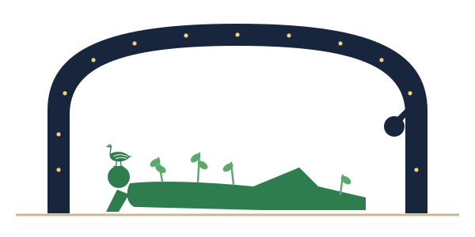

Genome Evolution and Bioinformatics Lab
We use evolution as a lens on the genome. Comparing genes, regulatory elements and protein structures across species tells us which changes matter, why organisms tolerate so much genetic variation, and how that knowledge can be turned into tools for medicine.
Illustrative alignment. The highlighted column is the kind of site we study: a position that differs between species and asks to be explained.
What we work on
Gene essentiality
Graph-based deep learning that predicts which genes a cell cannot live without, and which parts of the gene network explain why.
Gene regulation
Maps of transcription-factor binding, cis-regulatory elements and 3D genome structure that connect noncoding variants to the genes they control.
Molecular evolution
Genome-scale tests of evolutionary hypotheses: pseudogene function, protein structure space, and compensation behind disease-associated residues.
News
- Our team joins the Howard University All of Us Data Summer/Fall School, 2026 cohort.
- GRADS-4C seed grant awarded for cloud-based computational genomics.
- NIH NIGMS R15 award (R15GM165012) funds our work on predicting gene essentiality with variational graph attention networks.
- Talk at the COAS AI-ASCEND Symposium: “Have we solved gene essentiality prediction using deep learning?”
- The expanded registry of candidate cis-regulatory elements is published in Nature.
About the name

Geb was the ancient Egyptian god of the earth. He was usually shown lying on the ground beneath the arched body of Nut, the sky, with plants growing from his body, and his name was written with the sign of a goose.
We study the genome, the ground from which every organism grows. GEB also stands for what we do: Genome Evolution and Bioinformatics.